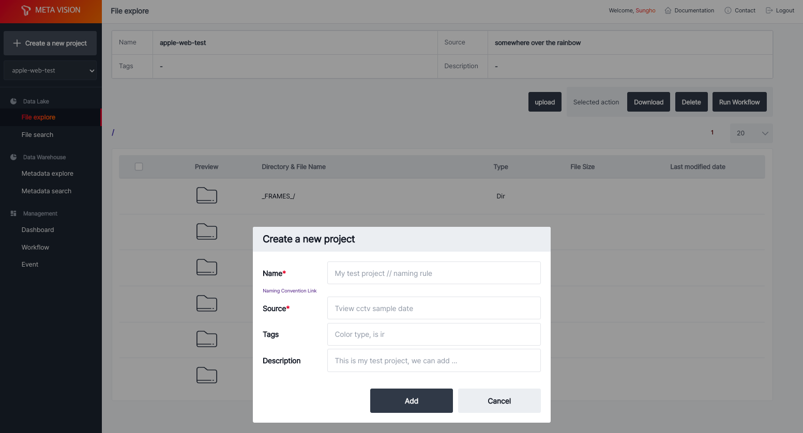
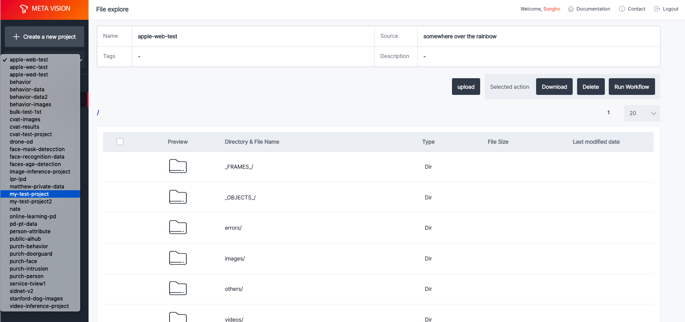
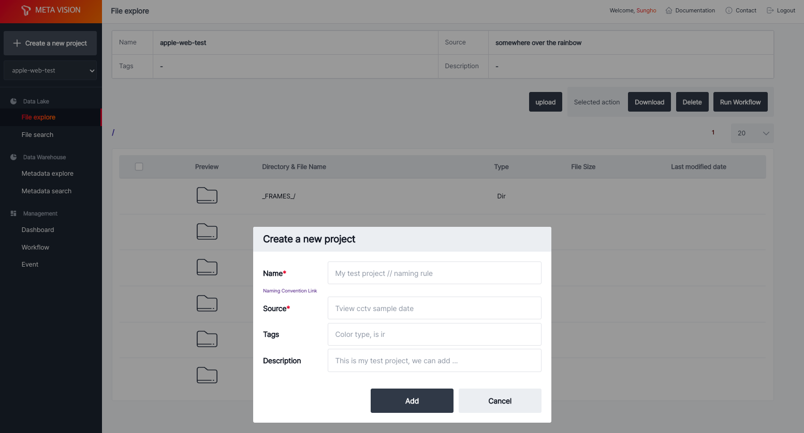
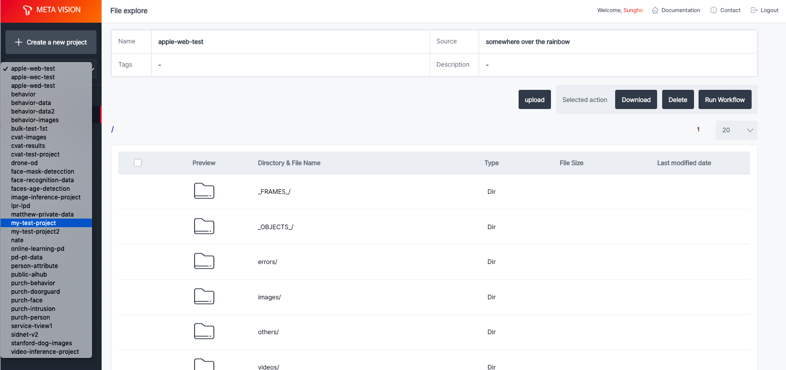

Create Project¶
로그인 후 프로젝트 생성을 통해 object storage에 저장 공간을 생성할 수 있습니다.
좌측 상단 Create a new project 를 통해 신규 프로젝트를 생성할 수 있습니다.

사용 가능한 프로젝트는 Create a new project 버튼 아래를 선택하여 목록을 확인할 수 있습니다.

로그인 후 프로젝트 생성을 통해 object storage에 저장 공간을 생성할 수 있습니다.
좌측 상단 Create a new project 를 통해 신규 프로젝트를 생성할 수 있습니다.

사용 가능한 프로젝트는 Create a new project 버튼 아래를 선택하여 목록을 확인할 수 있습니다.
